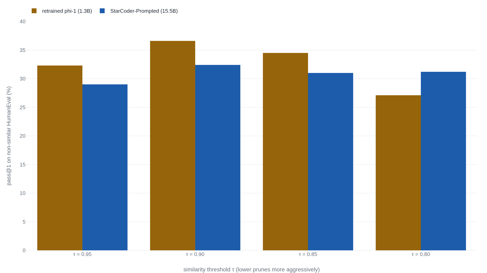

phi-1 matched code models 12x its size, but mostly on problems like its training set
Microsoft built the 1.3-billion-parameter model from about seven billion tokens of code that GPT-4 filtered and GPT-3.5 wrote, and it reached 50.6% on the HumanEval coding test.
Why this matters
Every few months a small AI model posts a benchmark score a much larger one cannot beat, and the lesson drawn is that clever data has made raw size optional. phi-1, a code model Microsoft released in 2023 under the title "Textbooks Are All You Need," is the paper most often cited for that lesson. This lesson reads it closely: what phi-1 did with its data, what its 50.6% on a coding test means, and what the paper's own contamination check shows when you read past its conclusion. By the end you will be able to say exactly what curated data bought here, and what it did not.
- 01
- Large language models, explained with a minimum of math and jargon: how a language model works, for a reader new to them.
- 02
- Textbooks Are All You Need: the phi-1 paper this lesson reads, in full.
The paper that made 1.3 billion parameters enough
In June 2023 a team at Microsoft Research published a paper whose title became a slogan: "Textbooks Are All You Need."1 Its model, phi-1, writes Python. It has 1.3 billion parameters, the adjustable numbers a model learns during training, which put it among the smallest code models anyone was benchmarking. It was trained on about seven billion tokens of text, where a token is a chunk of a word, roughly one for every three or four English characters. Code models of the time trained on a trillion tokens or more.1
phi-1 solved 50.6% of the problems on HumanEval, a standard Python coding test, on its first attempt, and 55.5% on a second test called MBPP.1 On HumanEval that put it level with or ahead of models ten to twelve times its size. The paper's claim was that the data did it: carefully filtered, "textbook quality" code and synthetic exercises, in place of raw scale.
What 50.6% on HumanEval actually counts
HumanEval is a set of 164 Python problems written by hand at OpenAI in 2021.2 Each gives a function signature and a short description of what the function should do, and hides a handful of unit tests, about eight per problem, that check whether a solution works.2 A model reads the description, writes the function, and passes only if its code passes every test. "pass@1" is the fraction it gets right on a single try.2
Code models train on much of public GitHub, which already holds worked solutions to any famous problem set, so a benchmark scraped from the web would be one the model had partly seen.2 Hand-written problems were meant to sit outside the training data. MBPP, the second test, is 974 short "mostly basic" Python problems built the same way and aimed at an entry-level programmer.3
Half right on the first try is hard to place without the field around it. Here is the company phi-1 kept.
| Model | Parameters | Training tokens | HumanEval |
|---|---|---|---|
| phi-1 | 1.3 B | 7 B | 50.6% |
| StarCoder | 15.5 B | ~1 T | 33.6% |
| CodeGen-Mono | 16.1 B | 577 B | 29.3% |
| WizardCoder | 16 B | ~1 T | 57.3% |
| GPT-4 | undisclosed | undisclosed | 67% |
phi-1 reaches StarCoder's neighborhood on a fraction of the parameters and a fraction of the data. StarCoder is 15.5 billion parameters trained on close to a trillion tokens; phi-1 is about a tenth its size trained on well under a hundredth its data, and scores seventeen points higher on HumanEval.1 WizardCoder, at more than ten times phi-1's size, edges it out. GPT-4 sits well above all of them. That seventeen-point gap over StarCoder is the result the slogan rests on.
Where the textbook data came from
"Textbook quality" is a filter, and the filter was built by a larger model. The team took roughly 100,000 code files and had GPT-4 label each one for how educational it was.1 Those labels trained a small classifier to score the rest of a 35-billion-token corpus, and the roughly six billion tokens it rated highest became phi-1's filtered code.1 On top of that the team added synthetic data: Python "textbooks" and about 880,000 practice exercises, each a docstring and a solution, all written by GPT-3.5.1
The exercises did most of the visible work. Before phi-1 was finetuned on them, a second short training pass on a narrow, focused set, the same pretrained model scored about 29% on HumanEval.1 The exercises lifted it to 50.6%.1 More than twenty of phi-1's points came from a training set GPT-3.5 wrote.
Microsoft said as much in its later phi-4 report, which states plainly that the earlier phi models "largely distill the capabilities of a teacher model (specifically GPT-4)."4 Distillation is training a small model on a larger one's output. phi-1's competence is partly GPT-3.5 and GPT-4's competence, copied into a smaller model. The scale did not vanish. It moved. A large model spent its scale once to write the textbooks, and phi-1 inherited the result without ever training at that size itself.
The paper's own pruning test
The authors saw the obvious worry: that phi-1 scored well because its generated exercises resembled the HumanEval problems it was tested on. When test problems leak into training data, the score measures memory, not skill. The field calls this contamination, and HumanEval's hand-written problems were the standard guard against it.2 But phi-1's exercises were generated, not scraped, and some landed close to the test.
So the team ran a check. They measured how similar each HumanEval problem was to phi-1's exercises, split the 164 problems into "similar" and "non-similar" at four thresholds, removed the matching exercises, retrained phi-1 from scratch, and scored it again.1 At the loosest threshold, 71 of the 164 problems counted as similar to something phi-1 had practiced.1 The paper concludes the score survives the pruning "by a large margin" and is not due to contamination.1
That conclusion describes phi-1's overall retrained score. The fairer number is the one on the non-similar problems alone, the problems phi-1 had not practiced. The paper compares that number against StarCoder-Prompted, the same StarCoder run with a coaching prompt, which scores higher than the plain version above. On the non-similar split the margin is small, and at the hardest pruning it turns negative.

At the loosest threshold the retrained phi-1 scores 32.3% on the non-similar problems against StarCoder-Prompted's 29.0%, a lead of about three points rather than seventeen.1 The lead holds at the two middle thresholds and then reverses: prune most aggressively, and phi-1 scores 27.1% while StarCoder-Prompted scores 31.2%.1 A 1.3-billion-parameter model tying a 15-billion one on unpracticed problems is a real result. The seventeen-point version of it was measured on a test where 71 of 164 problems looked like phi-1's homework.
How the approach traveled past phi-1
phi-1 was step one. Months later the same team applied the recipe to ordinary language in a 1.3-billion-parameter model called phi-1.5, which they said reached "performance on natural language tasks comparable to models 5x larger."5 The paper was titled "Textbooks Are All You Need II." The slogan was now a research program.
The later models are where independent scrutiny landed. In 2024 a team at Scale AI built GSM1k, 1,250 fresh grade-school math problems in the style of the widely used GSM8k set, held back so no model could have trained on them.6 Models that had memorized GSM8k scored lower on the new problems. The phi family dropped two to six points across releases, which the authors call a "systematic" tendency rather than a large one.6 Separately, the researcher Pratyush Maini measured phi-1.5's perplexity, a standard score for how well a model predicts ordinary text, and found it well behind equal-sized models everywhere except code and Q&A forums, the shapes its training data took.7
None of this measures phi-1's HumanEval score, which stands or falls on the paper's own pruning test. What it shows is a family whose benchmark numbers soften when the test moves off the ground its data was built to cover.
The takeaway
phi-1 is a real result told at the wrong size. A 1.3-billion-parameter model trained on about seven billion tokens did reach 50.6% on HumanEval and did keep pace with code models ten to twelve times larger, and curated data is why. But two things sit under the headline. The training data was written and filtered by GPT-3.5 and GPT-4, so a large model's scale was spent to build it. And on the paper's own fairest comparison, the problems phi-1 had not practiced, its lead over a model twelve times its size falls to a few points and, at the hardest pruning, reverses.
"Textbooks Are All You Need" is a good title and a smaller claim than it sounds. Better data bought phi-1 real efficiency. It did not buy the magnitude the slogan promises, and the paper's own numbers are where you can see the difference.
- 01
- Textbooks Are All You Need II: phi-1.5: the same recipe applied to language reasoning.
- 02
- A Careful Examination of LLM Performance on Grade School Arithmetic: the GSM1k held-out benchmark that tests later models for memorization.
- 03
- Pretraining on the Test Set Is All You Need: a three-page satire on what a benchmark score alone can prove.
Sources
- Microsoft Research · Gunasekar, Zhang, et al., "Textbooks Are All You Need" (phi-1), 2023
- OpenAI · Chen et al., "Evaluating Large Language Models Trained on Code" (HumanEval), 2021
- Google · Austin et al., "Program Synthesis with Large Language Models" (MBPP), 2021
- Microsoft Research · "Phi-4 Technical Report," 2024
- Microsoft Research · Li, Bubeck, et al., "Textbooks Are All You Need II: phi-1.5," 2023
- Scale AI · Zhang et al., "A Careful Examination of Large Language Model Performance on Grade School Arithmetic" (GSM1k), 2024
- Pratyush Maini · "phi-1.5" perplexity analysis